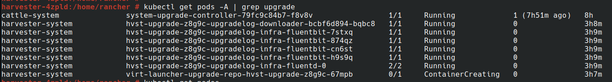
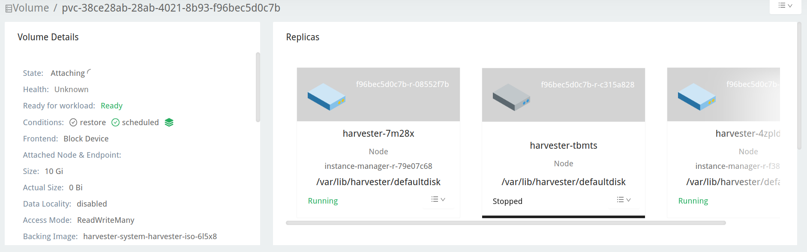
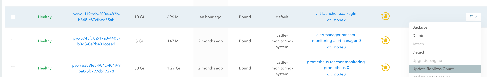
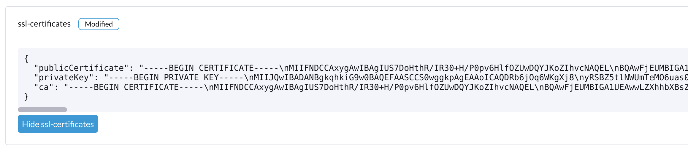

Upgrade from v1.1.2 to v1.2.0 (not recommended)
|
Due to the known issues found v1.2.0: We don’t recommend upgrading to v1.2.0. Please upgrade your v1.1.x cluster to v1.2.1. |
General information
|
Before you start an upgrade, you can run the pre-check script to make sure the cluster is in a stable state. For more details, please visit this URL for the script. |
Once there is an upgradable version, the Harvester GUI Dashboard page will show an upgrade button. For more details, please refer to start an upgrade.
For the air-gap env upgrade, please refer to prepare an air-gapped upgrade.
Known issues
1. An upgrade can’t start and reports "validator.harvesterhci.io" denied the request: managed chart rancher-monitoring is not ready, please wait for it to be ready
If a cluster is configured with a storage network, an upgrade can’t start with the following message.
2. An upgrade is stuck in Creating Upgrade Repository
During an upgrade, Creating Upgrade Repository is stuck in the Pending state:
Please perform the following steps to check if the cluster runs into the issue:
-
Check the upgrade repository pod:
If the
virt-launcher-upgrade-repo-hvst-<upgrade-name>pod stays inContainerCreating, your cluster might have run into this issue. In this case, proceed with step 2. -
Check the upgrade repository volume in the Longhorn GUI.
-
Navigate to the Volume page.
-
Check the upgrade repository VM volume. It should be attached to a pod called
virt-launcher-upgrade-repo-hvst-<upgrade-name>. If one of the volume’s replicas stays inStopped(gray color), the cluster is running into the issue.
-
Related issue:
-
Workaround:
-
Delete the
Stoppedreplica from Longhorn GUI. Or,
-
3. An upgrade is stuck when pre-draining a node
Starting from v1.1.0, Harvester will wait for all volumes to become healthy (when node count >= 3) before upgrading a node. Generally, you can check volumes' health if an upgrade is stuck in the "pre-draining" state.
Visit "Access Embedded Longhorn" to see how to access the embedded Longhorn GUI.
You can also check the pre-drain job logs. Please refer to Phase 4: Upgrade nodes in the troubleshooting guide.
4. An upgrade is stuck in upgrading the first node: Job was active longer than the specified deadline
An upgrade fails, as shown in the screenshot below:
5. An upgrade is stuck in the Pre-drained state
You might see an upgrade is stuck in the "pre-drained" state:

In this stage, Kubernetes is supposed to drain the workload on the node, but some reasons might cause the process to stall.
5.1 The node contains a Longhorn instance-manager-r pod that serves single-replica volume(s)
Longhorn doesn’t allow draining a node if the node contains the last surviving replica of a volume. To check if a node is running into this situation, follow these steps:
-
List single-replica volumes with the command:
kubectl get volumes.longhorn.io -A -o yaml | yq '.items[] | select(.spec.numberOfReplicas == 1) | .metadata.namespace + "/" + .metadata.name'
For example:
$ kubectl get volumes.longhorn.io -A -o yaml | yq '.items[] | select(.spec.numberOfReplicas == 1) | .metadata.namespace + "/" + .metadata.name' longhorn-system/pvc-d1f19bab-200e-483b-b348-c87cfbba85ab
-
Check if the replica resides on the stuck node:
List the NodeID of the volume’s replica with the command:
kubectl get replicas.longhorn.io -n longhorn-system -o yaml | yq '.items[] | select(.metadata.labels.longhornvolume == "<volume>") | .spec.nodeID'
For example:
$ kubectl get replicas.longhorn.io -n longhorn-system -o yaml | yq '.items[] | select(.metadata.labels.longhornvolume == "pvc-d1f19bab-200e-483b-b348-c87cfbba85ab") | .spec.nodeID' node1
If the result shows that the replica resides on the node where the upgrade is stuck (in this example, node1), your cluster is hitting this issue.
There are a couple of ways to address this situation. Choose the most appropriate method for your VM:
-
Shut down the VM that uses the single-replica volume to detach the volume, allowing the upgrade to continue.
-
Adjust the volumes’s replicas to more than one.
-
Go to the Volume page.
-
Locate the problematic volume and click the icon on the right side, then select Update Replicas Count: 
-
Increase the Number of Replicas and select OK.
5.2 Misconfigured Longhorn instance-manager-r Pod Disruption Budgets (PDB)
A misconfigured PDB could cause this issue. To check if that’s the case, perform the following steps:
-
Assume the stuck node is
harvester-node-1. -
Check the
instance-manager-eorinstance-manager-rpod names on the stuck node:$ kubectl get pods -n longhorn-system --field-selector spec.nodeName=harvester-node-1 | grep instance-manager instance-manager-r-d4ed2788 1/1 Running 0 3d8h
The output above shows that the
instance-manager-r-d4ed2788pod is on the node. -
Check Rancher logs and verify that the
instance-manager-eorinstance-manager-rpod can’t be drained:$ kubectl logs deployment/rancher -n cattle-system ... 2023-03-28T17:10:52.199575910Z 2023/03/28 17:10:52 [INFO] [planner] rkecluster fleet-local/local: waiting: draining etcd node(s) custom-4f8cb698b24a,custom-a0f714579def 2023-03-28T17:10:55.034453029Z evicting pod longhorn-system/instance-manager-r-d4ed2788 2023-03-28T17:10:55.080933607Z error when evicting pods/"instance-manager-r-d4ed2788" -n "longhorn-system" (will retry after 5s): Cannot evict pod as it would violate the pod's disruption budget.
-
Run the command to check if there is a PDB associated with the stuck node:
$ kubectl get pdb -n longhorn-system -o yaml | yq '.items[] | select(.spec.selector.matchLabels."longhorn.io/node"=="harvester-node-1") | .metadata.name' instance-manager-r-466e3c7f
-
Check the owner of the instance manager to this PDB:
$ kubectl get instancemanager instance-manager-r-466e3c7f -n longhorn-system -o yaml | yq -e '.spec.nodeID' harvester-node-2
If the output doesn’t match the stuck node (in this example output,
harvester-node-2doesn’t match the stuck nodeharvester-node-1), then we can conclude this issue happens. -
Before applying the workaround, check if all volumes are healthy:
kubectl get volumes -n longhorn-system -o yaml | yq '.items[] | select(.status.state == "attached")| .status.robustness'
The output should all be
healthy. If this is not the case, you might want to uncordon nodes to make the volume healthy again. -
Remove the misconfigured PDB:
kubectl delete pdb instance-manager-r-466e3c7f -n longhorn-system
5.3 The instance-manager-e pod could not be drained
During an upgrade, you might encounter an issue where you can’t drain the instance-manager-e pod. When this situation occurs, you will see error messages in the Rancher logs like the ones shown below:
$ kubectl logs deployment/rancher -n cattle-system | grep "evicting pod" evicting pod longhorn-system/instance-manager-r-a06a43f3437ab4f643eea7053b915a80 evicting pod longhorn-system/instance-manager-e-452e87d2 error when evicting pods/"instance-manager-r-a06a43f3437ab4f643eea7053b915a80" -n "Longhorn-system" (will retry after 5s): Cannot evict pod as it would violate the pod's disruption budget. error when evicting pods/"instance-manager-e-452e87d2" -n "longhorn-system" (will retry after 5s): Cannot evict pod as it would violate the pod's disruption budget.
Check the instance-manager-e to see if any engine instances remain.
$ kubectl get instancemanager instance-manager-e-452e87d2 -n longhorn-system -o yaml | yq -e ".status.instances"
pvc-7b120d60-1577-4716-be5a-62348271025a-e-1cd53c57:
spec:
name: pvc-7b120d60-1577-4716-be5a-62348271025a-e-1cd53c57
status:
endpoint: ""
errorMsg: ""
listen: ""
portEnd: 10001
portStart: 10001
resourceVersion: 0
state: running
type: ""
In this example, the instance-manager-e-452e87d2 still has an engine instance, so you can’t drain the pod.
You need to check the engine numbers to see if any engine number is redundant. Each PVC should only have one engine.
# kubectl get engines -n longhorn-system -l longhornvolume=pvc-7b120d60-1577-4716-be5a-62348271025a NAME STATE NODE INSTANCEMANAGER IMAGE AGE pvc-76120d60-1577-4716-be5a-62348271025a-e-08220662 running harvester-qv4hd instance-manager-e-625d715e2f2e7065d64339f9b31407c2 longhornio/longhorn-engine:v1.4.3 2d12h pvc-7b120d60-1577-4716-be5a-62348271025a-e-lcd53c57 running harvester-lhlkv instance-manager-e-452e87d2 longhornio/longhorn-engine:v1.4.3 4d10h
The example above shows that two engines exist for the same PVC, which is a known issue in Longhorn #6642. To resolve this, delete the redundant engine to allow the upgrade to continue.
To determine which engine is the correct one, use the following command:
$ kubectl get volumes pvc-7b120d60-1577-4716-be5a-62348271025a -n longhorn-system NAME STATE ROBUSTNESS SCHEDULED SIZE NODE AGE pvc-7b120d60-1577-4716-be5a-62348271025a attached healthy 42949672960 harvester-q4vhd 4d10h
In this example, the volume pvc-7b120d60-1577-4716-be5a-62348271025a is active on the node harvester-q4vhd, indicating that the engine not running on this node is redundant.
To make the engine inactive and trigger its automatic deletion by Longhorn, run the following command:
$ kubectl patch engine pvc-7b120d60-1577-4716-be5a-62348271025a-e-lcd53c57 -n longhorn-system --type='json' -p='[{"op": "replace", "path": "/spec/active", "value": false}]'
engine.longhorn.io/pvc-7b120d60-1577-4716-be5a-62348271025a-e-lcd53c57 patched
After a few seconds, you can verify the engine’s status:
$ kubectl get engine -n longhorn-system|grep pvc-7b120d60-1577-4716-be5a-62348271025a pvc-7b120d60-1577-4716-be5a-62348271025a-e-08220b62 running harvester-q4vhd instance-manager-e-625d715e2f2e7065d64339f9631407c2 longhornio/longhorn-engine:v1.4.3 2d13h
The instance-manager-e pod should now drain successfully, allowing the upgrade to proceed.
-
Related issue:
6. An upgrade is stuck in the Upgrading System Service state
If you notice the upgrade is stuck in the Upgrading System Service state for a long period of time, you might need to investigate if the upgrade is stuck in the apply-manifests phase.
POD prometheus-rancher-monitoring-prometheus-0 is to be deleted
-
Check the log of the
apply-manifestspod to see if the following messages repeat.$ kubectl -n harvester-system logs hvst-upgrade-md6wr-apply-manifests-wqslg --tail=10 Tue Sep 5 10:20:39 UTC 2023 there are still 1 pods in cattle-monitoring-system to be deleted Tue Sep 5 10:20:45 UTC 2023 there are still 1 pods in cattle-monitoring-system to be deleted Tue Sep 5 10:20:50 UTC 2023 there are still 1 pods in cattle-monitoring-system to be deleted Tue Sep 5 10:20:55 UTC 2023 there are still 1 pods in cattle-monitoring-system to be deleted Tue Sep 5 10:21:00 UTC 2023 there are still 1 pods in cattle-monitoring-system to be deleted
-
Check if the
prometheus-rancher-monitoring-prometheus-0pod is stuck with the statusTerminating.$ kubectl -n cattle-monitoring-system get pods NAME READY STATUS RESTARTS AGE prometheus-rancher-monitoring-prometheus-0 0/3 Terminating 0 19d
-
Find the UID of the terminating pod with the following command:
$ kubectl -n cattle-monitoring-system get pod prometheus-rancher-monitoring-prometheus-0 -o jsonpath='{.metadata.uid}' 33f43165-6faa-4648-927d-69097901471c -
Get access to any node of the cluster via the console or SSH.
-
Search for the related log messages in
/var/lib/rancher/rke2/agent/logs/kubelet.logusing the pod’s UID.E0905 10:26:18.769199 17399 reconciler.go:208] "operationExecutor.UnmountVolume failed (controllerAttachDetachEnabled true) for volume \"pvc-7781c988-c35b-4cf8-89e6-f2907ef33603\" (UniqueName: \"kubernetes.io/csi/driver.longhorn.io^pvc-7781c988-c35b-4cf8-89e6-f2907ef33603\") pod \"33f43165-6faa-4648-927d-69097901471c\" (UID: \"33f43165-6faa-4648-927d-69097901471c\") : UnmountVolume.NewUnmounter failed for volume \"pvc-7781c988-c35b-4cf8-89e6-f2907ef33603\" (UniqueName: \"kubernetes.io/csi/driver.longhorn.io^pvc-7781c988-c35b-4cf8-89e6-f2907ef33603\") pod \"33f43165-6faa-4648-927d-69097901471c\" (UID: \"33f43165-6faa-4648-927d-69097901471c\") : kubernetes.io/csi: unmounter failed to load volume data file [/var/lib/kubelet/pods/33f43165-6faa-4648-927d-69097901471c/volumes/kubernetes.io~csi/pvc-7781c988-c35b-4cf8-89e6-f2907ef33603/mount]: kubernetes.io/csi: failed to open volume data file [/var/lib/kubelet/pods/33f43165-6faa-4648-927d-69097901471c/volumes/kubernetes.io~csi/pvc-7781c988-c35b-4cf8-89e6-f2907ef33603/vol_data.json]: open /var/lib/kubelet/pods/33f43165-6faa-4648-927d-69097901471c/volumes/kubernetes.io~csi/pvc-7781c988-c35b-4cf8-89e6-f2907ef33603/vol_data.json: no such file or directory" err="UnmountVolume.NewUnmounter failed for volume \"pvc-7781c988-c35b-4cf8-89e6-f2907ef33603\" (UniqueName: \"kubernetes.io/csi/driver.longhorn.io^pvc-7781c988-c35b-4cf8-89e6-f2907ef33603\") pod \"33f43165-6faa-4648-927d-69097901471c\" (UID: \"33f43165-6faa-4648-927d-69097901471c\") : kubernetes.io/csi: unmounter failed to load volume data file [/var/lib/kubelet/pods/33f43165-6faa-4648-927d-69097901471c/volumes/kubernetes.io~csi/pvc-7781c988-c35b-4cf8-89e6-f2907ef33603/mount]: kubernetes.io/csi: failed to open volume data file [/var/lib/kubelet/pods/33f43165-6faa-4648-927d-69097901471c/volumes/kubernetes.io~csi/pvc-7781c988-c35b-4cf8-89e6-f2907ef33603/vol_data.json]: open /var/lib/kubelet/pods/33f43165-6faa-4648-927d-69097901471c/volumes/kubernetes.io~csi/pvc-7781c988-c35b-4cf8-89e6-f2907ef33603/vol_data.json: no such file or directory"
If kubelet continues to complain about the volume failing to unmount, apply the following workaround to allow the upgrade to proceed.
-
Forcibly remove the pod stuck with the status
Terminatingwith the following command:kubectl delete pod prometheus-rancher-monitoring-prometheus-0 -n cattle-monitoring-system --force
Multiple PODs in cattle-monitoring-system namespace are to be deleted
-
Check the log of the
apply-manifestspod to see if the following messages repeat.there are still 10 pods in cattle-monitoring-system to be deleted Fri Dec 8 19:06:56 UTC 2023 there are still 10 pods in cattle-monitoring-system to be deleted Fri Dec 8 19:07:01 UTC 2023
When it continues to show 10 (or other number) pods, it encounters below issue.
The monitoring feature is deployed from the rancher-monitoring ManagedChart, in Harvester v1.2.0,v1.2.1, this ManagedChart is converted to Harvester Addon feature when upgrading. The ManagedChart rancher-monitoring is deleted, normally, all the generated resources including deployment, daemonset etc. will be deleted automatically. But in this case, those resources are not deleted. The above log reflects the result. Following instructions will guide to delete them manually.
-
Locate the affected resources in the
cattle-monitoring-systemnamespace.Root level resources in cattle-monitoring-system Customized CRD: Prometheus Object: rancher-monitoring-prometheus Sub-object: statefulset.apps/prometheus-rancher-monitoring-prometheus Customized CRD: Alertmanager object: rancher-monitoring-alertmanager Sub-object: statefulset.apps/alertmanager-rancher-monitoring-alertmanager Deployment: rancher-monitoring-grafana rancher-monitoring-kube-state-metrics rancher-monitoring-operator rancher-monitoring-prometheus-adapter Daemonset: rancher-monitoring-prometheus-node-exporter
-
Delete the affected resources.
Use below commands to delete them, meanwhile check the log of the `apply-manifests` until it does not report `there are still x pods in cattle-monitoring-system to be deleted`. kubectl delete prometheus rancher-monitoring-prometheus -n cattle-monitoring-system kubectl delete alertmanager rancher-monitoring-alertmanager -n cattle-monitoring-system kubectl delete deployment rancher-monitoring-grafana -n cattle-monitoring-system kubectl delete deployment rancher-monitoring-kube-state-metrics -n cattle-monitoring-system kubectl delete deployment rancher-monitoring-operator -n cattle-monitoring-system kubectl delete deployment rancher-monitoring-prometheus-adapter -n cattle-monitoring-system kubectl delete daemonset rancher-monitoring-prometheus-node-exporter -n cattle-monitoring-system
You may need to run some of the commands more than once to completely delete the resources.
-
Related issue
7. Upgrade stuck in the Upgrading System Service state
If an upgrade is stuck in an Upgrading System Service state for an extended period, some system services' certificates may have expired. To investigate and resolve this issue, follow these steps:
-
Find the
apply-manifestjob’s name with the command:kubectl get jobs -n harvester-system -l harvesterhci.io/upgradeComponent=manifest
Example output:
NAME COMPLETIONS DURATION AGE hvst-upgrade-9gmg2-apply-manifests 0/1 46s 46s
-
Check the job’s log with the command:
kubectl logs jobs/hvst-upgrade-9gmg2-apply-manifests -n harvester-system
If the following messages appear in the log, continue to the next step:
Waiting for CAPI cluster fleet-local/local to be provisioned (current phase: Provisioning, current generation: 30259)... Waiting for CAPI cluster fleet-local/local to be provisioned (current phase: Provisioning, current generation: 30259)... Waiting for CAPI cluster fleet-local/local to be provisioned (current phase: Provisioning, current generation: 30259)... Waiting for CAPI cluster fleet-local/local to be provisioned (current phase: Provisioning, current generation: 30259)...
-
Check CAPI cluster’s state with the command:
kubectl get clusters.provisioning.cattle.io local -n fleet-local -o yaml
If you see a condition similar to the one below, it’s likely that the cluster has encountered the issue:
- lastUpdateTime: "2023-01-17T16:26:48Z" message: 'configuring bootstrap node(s) custom-24cb32ce8387: waiting for probes: kube-controller-manager, kube-scheduler' reason: Waiting status: Unknown type: Updated -
Find the machine’s hostname with the following command, and follow the workaround to see if service certificates expire on a node:
kubectl get machines.cluster.x-k8s.io -n fleet-local <machine_name> -o yaml | yq .status.nodeRef.name
Replace
<machine_name>with the machine’s name from the output in the previous step.If multiple nodes joined the cluster around the same time, you should perform the workaround on all those nodes.
8. The registry.suse.com/harvester-beta/vmdp:latest image is not available in air-gapped environment
Harvester does not package the registry.suse.com/harvester-beta/vmdp:latest image in the ISO file as of v1.1.0. For Windows VMs before v1.1.0, they used this image as a container disk. However, kubelet may remove old images to free up bytes. Windows VMs can’t access an air-gapped environment when this image is removed. You can fix this issue by changing the image to registry.suse.com/suse/vmdp/vmdp:2.5.4.2 and restarting the Windows VMs.
-
Related issue:
9. An Upgrade is stuck in the Post-draining state
|
This known issue is fixed in v1.2.1. |
The node might be stuck in the OS upgrade process if you encounter the Post-draining state, as shown below.
Harvester uses elemental upgrade to help us upgrade the OS. Check the elemental upgrade logs to see if there are any errors.
You can check the elemental upgrade logs with the following commands:
# View the post-drain job, which should be named `hvst-upgrade-xxx-post-drain-xxx`
$ kubectl get pod --selector=harvesterhci.io/upgradeJobType=post-drain -n harvester-system
# Check the logs with the following command
$ kubectl logs -n harvester-system pods/hvst-upgrade-xxx-post-drain-xxxSuppose you see the following error in the logs. An incomplete state.yaml causes this issue.
Flag --directory has been deprecated, 'directory' is deprecated please use 'system' instead
INFO[2023-09-13T12:02:42Z] Starting elemental version 0.3.1
INFO[2023-09-13T12:02:42Z] reading configuration form '/tmp/tmp.N6rn4F6mKM'
ERRO[2023-09-13T12:02:42Z] Invalid upgrade command setup undefined state partition
elemental upgrade failed with return code: 33
+ ret=33
+ '[' 33 '!=' 0 ']'
+ echo 'elemental upgrade failed with return code: 33'
+ cat /host/usr/local/upgrade_tmp/elemental-upgrade-20230913120242.logIn this case, Harvester upgrades the elemental-cli to the latest version. It will try to find the state partition from the state.yaml. If the state.yaml is incomplete, there is a chance it will fail to find the state partition.
The incomplete state.yaml will look like the following.
# Autogenerated file by elemental client, do not edit
date: "2023-09-13T08:31:42Z"
state:
# we are missing `label` here.
active:
source: dir:///tmp/tmp.01deNrXNEC
label: COS_ACTIVE
fs: ext2
passive: nullRemove this incomplete state.yaml file to work around this issue. (The post-draining will retry every 10 minutes).
-
Remount the
statepartition to RW.$ mount -o remount,rw /run/initramfs/cos-state -
Remove the
state.yaml.$ rm -f /run/initramfs/cos-state/state.yaml -
Remount the
statepartition to RO.$ mount -o remount,ro /run/initramfs/cos-state
After performing the steps above, you should pass post-draining with the next retry.
10. An upgrade is stuck in the Upgrading System Service state due to the customer provided SSL certificate without IP SAN error in fleet-agent
|
This known issue is fixed in v1.2.1. |
If an upgrade is stuck in an Upgrading System Service state for an extended period, follow these steps to investigate this issue:
-
Find the pods related to the upgrade:
kubectl get pods -A | grep upgrade
Example output:
# kubectl get pods -A | grep upgrade cattle-system system-upgrade-controller-5685d568ff-tkvxb 1/1 Running 0 85m harvester-system hvst-upgrade-vq4hl-apply-manifests-65vv8 1/1 Running 0 87m // waiting for managedchart to be ready ..
-
The pod
hvst-upgrade-vq4hl-apply-manifests-65vv8has the following loop log:Current version: 102.0.0+up40.1.2, Current state: WaitApplied, Current generation: 23 Sleep for 5 seconds to retry
-
Check the status for all bundles. Note thata couple of bundles are
OutOfSync:# kubectl get bundle -A NAMESPACE NAME BUNDLEDEPLOYMENTS-READY STATUS ... fleet-local mcc-local-managed-system-upgrade-controller 1/1 fleet-local mcc-rancher-logging 0/1 OutOfSync(1) [Cluster fleet-local/local] fleet-local mcc-rancher-logging-crd 0/1 OutOfSync(1) [Cluster fleet-local/local] fleet-local mcc-rancher-monitoring 0/1 OutOfSync(1) [Cluster fleet-local/local] fleet-local mcc-rancher-monitoring-crd 0/1 WaitApplied(1) [Cluster fleet-local/local]
-
The pod
fleet-agent-*has following error log:fleet-agent pod log: time="2023-09-19T12:18:10Z" level=error msg="Failed to register agent: looking up secret cattle-fleet-local-system/fleet-agent-bootstrap: Post \"https://192.168.122.199/apis/fleet.cattle.io/ v1alpha1/namespaces/fleet-local/clusterregistrations\": tls: failed to verify certificate: x509: cannot validate certificate for 192.168.122.199 because it doesn't contain any IP SANs"
-
Check the
ssl-certificatessettings in Harvester:From the command line:
# kubectl get settings.harvesterhci.io ssl-certificates NAME VALUE ssl-certificates {"publicCertificate":"-----BEGIN CERTIFICATE-----\nMIIFNDCCAxygAwIBAgIUS7DoHthR/IR30+H/P0pv6HlfOZUwDQYJKoZIhvcNAQEL\nBQAwFjEUMBIGA1UEAwwLZXhhbXBsZS5j...."}From the Harvester Web UI:
 -
Check the
server-urlsetting, it is the value of VIP:# kubectl get settings.management.cattle.io -n cattle-system server-url NAME VALUE server-url https://192.168.122.199
-
The root cause:
User sets the self-signed
ssl-certificateswith FQDN in the Harvester settings, but theserver-urlpoints to the VIP, thefleet-agentpod fails to register.For example: create self-signed certificate for (*).example.com openssl req -x509 -newkey rsa:4096 -sha256 -days 3650 -nodes \ -keyout example.key -out example.crt -subj "/CN=example.com" \ -addext "subjectAltName=DNS:example.com,DNS:*.example.com" The general outputs are: example.crt, example.key
-
The workaround:
Update
server-urlwith the value ofhttps://harv31.example.com# kubectl edit settings.management.cattle.io -n cattle-system server-url setting.management.cattle.io/server-url edited ... # kubectl get settings.management.cattle.io -n cattle-system server-url NAME VALUE server-url https://harv31.example.com
After the workaround is applied, the
fleet-agentpod is replaced by Rancher automatically and registers successfully, the upgrade continues.
11. An upgrade is denied due to managed chart rancher-monitoring-crd is not ready
When you start an upgrade and Harvester returns such an error message: admission webhook "validator.harvesterhci.io" denied the request: managed chart rancher-monitoring-crd is not ready, please wait for it to be ready. Please follow this troubleshooting.